Tutorial¶
Before moving forward, make sure you understand:
- What is probability? That’s a big question... If you feel like it, I suggest you skim through E. T. Jaynes‘s book Probability Theory: The Logic of Science.
- What is MCMC?
- Read the tutorial of PyMC. To the very least, you need to be able to construct probabilistic models using this package. For advanced applications, you need to be able to construct your own MCMC step methods.
- Of course, I have to assume some familiarity with the so called Sequential Monte Carlo (SMC) or Particle Methods. Many resources can be found online at Arnaud Doucet’s collection or in his book Sequential Monte Carlo Methods in Practice. What exactly pysmc does is documented in Mathematical Details.
What is Sequential Monte Carlo?¶
Sequential Monte Carlo (SMC) is a very efficient and effective way to sample from complicated probability distributions known up to a normalizing constant. The most important complicating factor is multi-modality. That is, probability distributions that do not look at all like Gaussians.
The complete details can be found in Mathematical Details. However, let us give some
insights on what is really going on. Assume that we want so sample
from a probability distribution  , known up to a normalizing
constant:
, known up to a normalizing
constant:
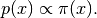
Normally, we construct a variant of MCMC to sample from this
distribution. If is multi-modal, it is certain that the Markov
Chain will get attracted to one of the modes. Theoretically, if the modes are
connected, it is guaranteed that they will all be visited
as the number of MCMC steps goes to infinity. However, depending on the
probability of the paths that connect the modes, the chain might
never escape during the finite number of MCMC steps that we can actually afford
to perform.
SMC attempts to alleviate this problem. The way it does it is similar to the ideas found in Simulated Annealing. The user defines a family of probability densities:
(1)
such that:
- it is easy to sample from 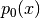 (either directly or using MCMC),
- the probability densities 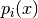 and 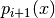 are similar,
- the last probability density of the sequence is the target, i.e., 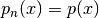.
There are many ways to define such a sequence. Usually, the exact sequence that needs to be followed is obvious from the definition of the problem. An obvious choice is:
(2)
where 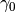 is a non-negative number that makes look
flat (e.g., if has a compact support, you may choose
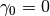 which makes the uniform density. For
the general case a choice like 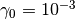 would still do a good
job) and 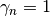. If  is chosen sufficiently large and
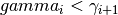 then indeed and
will look similar.
is chosen sufficiently large and
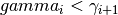 then indeed and
will look similar.
Now we are in a position to discuss what SMC does. We represent each one of the
probability densities
(1) with a particle approximation
 , where:
, where:
 is known as the number of particles,
is known as the number of particles,- 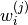 is known as the weight of particle
 (normalized so that 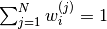),
(normalized so that 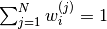), - 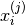 is known as the particle .
Typically we write:
(3)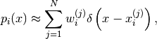
but what we really mean is that for any measurable
function of the state space  the following holds:
the following holds:
(4)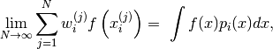
almost surely.
So far so good. The only issue here is actually constructing a particle approximation satisfying (4). This is a little bit involved and thus described in Mathematical Details. Here it suffices to say that it more or less goes like this:
- Start with 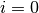 (i.e., the easy to sample distribution).
- Sample 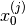 from either directly (if possible) or using MCMC and set the weights equal to 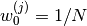. Then (4) is satisfied for .
- Compute the weights 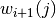 and sample -using an appropriate MCMC kernel- the particles of the next step 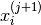 so that they corresponding particle approximation satisfies (4).
- Set 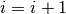.
- If 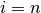 stop. Otherwise go to 3.
What is implemented in pysmc?¶
pysmc implements something a little bit more complicated than what is described in What is Sequential Monte Carlo?. The full description can be found in Mathematical Details. Basically, we assume that the user has defined a one-parameter family of probability densities:
(5)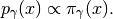
The code must be initialized with a particle approximation at a desired value
of 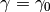. This can be done either manually by the user or
automatically by pysmc (e.g. by direct sampling or MCMC).
Having constructed an initial particle approximation, the code can be instructed
to move it to another 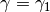. If the two probability densities
 and 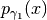 are close, then the code
will jump directly into the construction of the particle approximation at
. If not, then it will adaptively construct a finite
sequence of
and 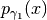 are close, then the code
will jump directly into the construction of the particle approximation at
. If not, then it will adaptively construct a finite
sequence of  ‘s connecting and 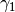
and jump from one to the other. Therefore, the user only needs to specify:
‘s connecting and 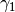
and jump from one to the other. Therefore, the user only needs to specify:
- the initial, easy-to-sample-from probability density,
- the target density,
- a one-parametric family of densities that connect the two.
We will see how this can be achieved through a bunch of examples.
A Simple Example¶
We will start with a probability density with two modes, namely a mixture of two normal densities:
(6)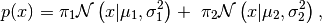
where 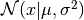 denotes the probability density of a
normal random variable with mean  and variance
and variance  .
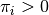 is the weight given to the
.
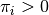 is the weight given to the  -th normal
(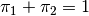) and 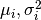 are the corresponding
mean and variance. We pick the following parameters:
-th normal
(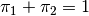) and 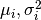 are the corresponding
mean and variance. We pick the following parameters:
- 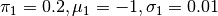,
- 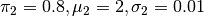.
This probability density is shown in Simple Example PDF Figure. It is obvious that sampling this probability density using MCMC will be very problematic.

Plot of (6) with and .
Defining a family of probability densities for SMC¶
Remember that our goal is to sample (6) using SMC. Towards this goal we need to define a one-parameter family of probability densities (5) starting from a simple one to our target. The simplest choice is probably this:
(7)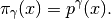
Notice that: 1) for  we obtain 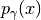 and 2) for
small (say 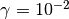) we obtain a relatively flat
probability density. See Simple Example Family of PDF’s Figure.
we obtain 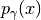 and 2) for
small (say 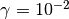) we obtain a relatively flat
probability density. See Simple Example Family of PDF’s Figure.
Plot of  of (7) for
various ‘s.
of (7) for
various ‘s.
Defining a PyMC model¶
Since, this is our very first example we will use it as an opportunity to show how PyMC can be used to define probabilistic models as well as MCMC sampling algorithms. First of all let us mention that a PyMC model has to be packaged either in a class or in a module. For the simple example we are considering, we choose to use the module approach (see examples/simple_model.py). The model can be trivially defined using PyMC decorators. All we have to do is define the logarithm of 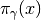. We will call it mixture. The contents of that module are:
1 2 3 4 5 6 7 8 9 10 11 12 13 14 15 16 17 18 19 20 21 22 23 24 25 26 27 28 29 30 31 32 33 34 35 36 37 38 39 40 | import pymc
import numpy as np
import math
@pymc.stochastic(dtype=float)
def mixture(value=1., gamma=1., pi=[0.2, 0.8], mu=[-1., 2.],
sigma=[0.01, 0.01]):
"""
The log probability of a mixture of normal densities.
:param value: The point of evaluation.
:type value : float
:param gamma: The parameter characterizing the SMC one-parameter
family.
:type gamma : float
:param pi : The weights of the components.
:type pi : 1D :class:`numpy.ndarray`
:param mu : The mean of each component.
:type mu : 1D :class:`numpy.ndarray`
:param sigma: The standard deviation of each component.
:type sigma : 1D :class:`numpy.ndarray`
"""
# Make sure everything is a numpy array
pi = np.array(pi)
mu = np.array(mu)
sigma = np.array(sigma)
# The number of components in the mixture
n = pi.shape[0]
# pymc.normal_like requires the precision not the variance:
tau = np.sqrt(1. / sigma ** 2)
# The following looks a little bit awkward because of the need for
# numerical stability:
p = np.log(pi)
p += np.array([pymc.normal_like(value, mu[i], tau[i])
for i in range(n)])
p = math.fsum(np.exp(p))
# logp should never be negative, but it can be zero...
if p <= 0.:
return -np.inf
return gamma * math.log(p)
|
This might look a little bit complicated but unfortunately one has to take care of round-off errors when sump small numbers... Notice that, we have defined pretty much every part of the mixture as an independent variable. The essential variable that defines the family of (7) is gamma. Well, you don’t actually have to call it gamma, but we will talk about this later...
Let’s import that module and see what we can do with it:
>>> import simple_model as model
>>> print model.mixture.parents
{'mu': [-1.0, 2.0], 'pi': [0.2, 0.8], 'sigma': [0.01, 0.01], 'gamma': 1.0}
The final command shows you all the parents of the stochastic variable mixture. The stochastic variable mixture was assigned a value by default (see line 4 at the code block above). You can see the current value of the stochastic variable at any time by doing:
>>> print model.mixture.value
1.0
If we started a MCMC chain at this point, this would be the initial value of the chain. You can change it to anything you want by simply doing:
>>> model.mixture.value = 0.5
>>> print model.mixture.value
0.5
To see the logarithm of the probability at the current state of the stochastic variable, do:
>>> print model.mixture.logp
-111.11635344
Now, if you want to change, let’s say, gamma to 0.5 all you have to do is:
>>> model.mixture.parents['gamma'] = 0.5
>>> print model.mixture.gamma
0.5
The logarithm of the probability should have changed also:
>>> print model.mixture.logp
-55.5581767201
Attempting to do MCMC¶
Let’s load the model again and attempt to do MCMC using PyMC‘s functionality:
>>> import simple_model as model
>>> import pymc
>>> mcmc_sampler = pymc.MCMC(model)
>>> mcmc_sampler.sample(1000000, thin=1000, burn=1000)
You should see a progress bar measuring the number of samples taken. It should take about a minute to finish. We are actually doing 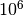 MCMC steps, we burn the first burn = 1000 samples and we are looking at the chain every thin = 1000 samples (i.e., we are dropping everything in between). PyMC automatically picks a proposal (see MCMC step methods) for you. For this particular example it should have picked pymc.step_methods.Metropolis which corresponds to a simple random walk proposal. There is no need to tune the parameters of the random walk since PyMC is supposed to do that for you. In any case, it is possible to find the right variance for the random walk, but you need to know exactly how far apart the modes are...
You may look at the samples we’ve got by doing:
>>> print mcmc_sampler.trace('mixture')[:]
[ 1.9915846 1.93300521 2.09291872 2.05159841 2.06620882 1.88901709
1.89521431 1.9631256 2.0363258 1.9756637 2.04818845 1.85036634
1.98907666 1.82212356 1.97678175 1.99854311 1.92124829 2.02077581
2.08536334 2.16664208 2.08328293 2.05378638 1.89437676 2.09555348
...
Now, let us plot the results:
>>> import matplotlib.pyplot as plt
>>> pymc.plot(mcmc_sampler)
>>> plt.show()
The results are shown in Simple Example MCMC Figure. Unless, you are extremely lucky, you should have missed one of the modes...